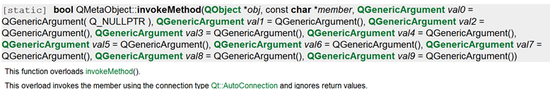

1. 线程与界面组件需要注意的地方
2.QThread线程如何操作界面组件-方法1
3.QThread线程如何操作界面组件-方法2
4.使用Invokes()函数来调用界面组件的信号槽-方法3
一般使用该函数(用来调用对方的私有信号或槽):

该函数的连接方式默认使用的是Qt::AutoConnection
比如,当我们想调用一个obj下的compute(QString, int, double)槽函数时:
则只需要写入:
QMetaObject::invokeMethod(obj, "compute", Q_ARG(QString, "sqrt"), Q_ARG(int, 42), Q_ARG(double, 9.7));
示例如下所示:
在Testtherd线程类里通过invokeMethod向父界面类的paintMsg槽函数发送信息
void Testtherd::run()
{
int count=0;
while(1)
{
QString str="请稍等,正在验证用户,登录中";
for(int i =0;i<count;i++)
str.append('.'); //循环添加小数点
count=(count+1)%7;
QMetaObject::invokeMethod(this->parent(), "paintMsg",
Q_ARG(QString, str));
msleep(500);
}
}父界面类的paintMsg槽函数如下所示:
void loginwindow:: paintMsg(QString msg) {
this->LineHint->setText(msg);
}运行效果如下: